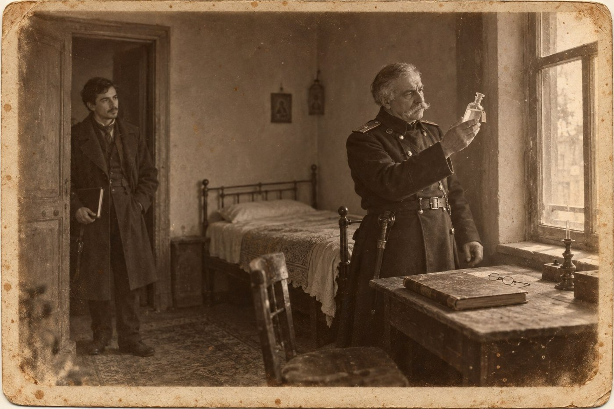

Сигнатура

Происшествия
«Тифлисский листок», 28 сентября 1904 года
Вчера, 27 сентября, в Сололаках, в доме вдовы М., найден мёртвым в своей квартире отставной коллежский регистратор Мелитон Кобаидзе, 84 лет, проживавший одиноко. По осмотре тела городовым врачом признаков насильственной смерти не обнаружено. Смерть последовала от естественных причин.
1
В Тифлис я приехал бакинским поездом двадцать пятого сентября, и первое, что я узнал о городе, было то, что он пахнет давленым виноградом. Я потом не раз пробовал описать этот запах в стихах и всякий раз получал то погреб, то аптеку, поэтому скажу просто: пахло так, будто весь город накануне пролил что-то сладкое и не вытер.
От вокзала ходила конка. Она тащилась по Михайловскому проспекту мимо развороченной мостовой, где клали новые рельсы: к зиме городу обещали электрический трамвай, и рабочие смотрели на наших лошадей с тем превосходством, с каким могильщик смотрит на больного. Рядом с вагоном шли арбы с корзинами, из корзин текло, и мальчишки бежали следом и подставляли ладони.
Мне было двадцать восемь лет. За плечами у меня имелись казанская гимназия, шесть лет за прилавком отцовской аптеки и книжка стихов, изданная на отцовские же деньги. Отец дал их с условием, что я переболею. Название книжки я здесь не привожу из милосердия к себе; довольно сказать, что в Казани продали одиннадцать экземпляров, из которых четыре купила моя тётка.
Отец умер весной. Он был провизор, человек точный и молчаливый, и за всю жизнь сказал мне о своём отце две фразы. Первая была: «Он был из кавказских». Вторая: «Он переписывал для профессоров восточные бумаги, и больше тебе знать незачем». Деда звали Автоном Васянин. Когда я разбирал после похорон отцовский стол, в нижнем ящике нашёлся сундучок, о котором в семье рассказывали, что он один уцелел в пожар сорок второго года, когда выгорело пол-Казани. В сундучке лежали три тетради, исписанные сверху донизу письмом, которое я сперва принял за узор. Я показал их аптечному ученику из татар, и он сказал, что это не по-арабски. Я показал их в университете, и мне сказали, что это по-грузински и что в Казани этого теперь никто не прочтёт.
Дядя Аршак, муж отцовой сестры, торговал в Тифлисе мануфактурой. Он написал, что в городе есть русская газета, которой нужен человек, умеющий держать перо, и что на первое время он меня устроит. Про стихи в письме не было ни слова, из чего я заключил, что тётка ему всё рассказала.
Комнату я снял в Сололаках, во втором этаже, с окном на галерею. Паспорт мой взял дворник, чтобы снести в участок на прописку. Это был сухой старик в войлочной шапочке, и по-русски он читал медленно, шевеля губами.
— Ва-ся-нин, — прочёл он и поднял на меня глаза. — Вазиани?
— Васянин.
— Я и говорю: Вазиани. Грузин?
— Русский. Из Казани.
Он посмотрел на меня с сожалением, как смотрят на человека, который потерял кошелёк и ещё этого не заметил, сложил паспорт и ушёл. К вечеру во дворе меня звали Вазиани все, включая кошку, которой, правда, было всё равно.
В редакции «Тифлисского листка» на меня не взглянули: принесли телеграммы с Дальнего Востока, армия Куропаткина перешла в наступление, и все стояли над столом, как над больным, которому стало лучше. Редактор освободился через час. Он выслушал, что я печатался, спросил, где, не дослушал ответа и сказал, что стихов газета не берёт, а в хронику происшествий человек нужен, плата построчная.
Так я стал репортёром. Тетради лежали у меня в чемодане, завёрнутые в отцовское полотенце, и я в первый же вечер спросил дворника, нет ли в городе человека, который читает по-старому.
— Зачем в городе, — сказал дворник. — Через двор. Мелитон. Он при трёх наместниках бумаги писал.
2
К Мелитону я пошёл на другой день к вечеру, двадцать шестого. Он жил через двор, тоже во втором этаже, и дверь у него стояла открытой, как у людей, которым нечего прятать или некого бояться. Я тогда не умел отличить одно от другого.
Это был маленький чистый старик с жёлтыми от табака усами. По-русски он говорил правильно и книжно, как говорят люди, выучившие язык по казённым бумагам, и ни разу за весь разговор не сказал мне «вы» без того, чтобы слегка не поклониться. Я объяснил, зачем пришёл. Он надел очки, придвинул лампу и раскрыл первую тетрадь.
Сначала он читал так, как читают чужое: ровно, держа страницу на отлёте. Потом он придвинул тетрадь к самому лицу и повёл по строке ногтем. Потом вернулся к началу страницы и прочёл её ещё раз, уже медленнее, и я увидел, что у него дрожит не рука, а нижняя губа.
Я спросил, стихи ли это. Сам я был в этом уверен: строки стояли столбиком и были одной длины, а сверх того мне очень хотелось, чтобы это были стихи. Он не ответил. Я, помнится, обиделся, что он ни разу не поднял на меня глаз.
— Кто вам это дал? — спросил он наконец.
— Никто. Это дедовы тетради.
— Как звали вашего деда?
— Автоном Васянин.
— Автоном, — повторил старик так, как пробуют незнакомое кушанье, и покачал головой. — Нет. Автоном не мог этого написать.
Он взял с этажерки четвертушку бумаги, обмакнул перо и стал списывать с тетради, не спрашивая позволения. Писал он быстро и твёрдо, совсем не так, как читал. Списав четыре строки, он остановился, промокнул листок и накрыл его ладонью.
— Приходите завтра после обеда, господин Васянин. Мне надо вспомнить одну вещь. Я старый человек, я вспоминаю медленно.
— Вы хотя бы скажите, о чём там.
— Завтра.
В дверь без стука вошёл молодой человек лет тридцати, с напомаженной головой и в новых штиблетах, которые скрипели на каждом шагу. В руке у него была аптечная склянка с привязанным ярлыком. Он поставил её на подоконник, сказал по-русски: «Дядя, капли», увидел меня и перешёл на грузинский.
Старик ответил ему длинно. Из всего ответа я понял одно слово, и то потому, что слышал его второй день подряд от дворника, от прачки и от мальчишки, носившего мне воду. Старик сказал «Вазиани» и показал на меня подбородком.
Молодой человек оглядел меня с головы до ног, очень вежливо, и улыбнулся. Потом он отсчитал дяде капли в рюмку, подождал, пока тот выпьет, и вышел, скрипя штиблетами.
Я завернул тетради в полотенце и откланялся. На галерее я обернулся. Старик сидел над своим листком, не зажигая второй лампы, и губы у него шевелились.
Ночью я не спал. Я лежал и сочинял, что мне скажут завтра: что дед мой был знаменитый поэт, что стихи его знает наизусть вся Грузия, что в Тифлисе ему стоит памятник, только под другим именем. К утру я дошёл до того, что сам читал эти стихи с эстрады в собственном переводе. Я говорю об этом, чтобы было понятно, в каком состоянии ума я находился, когда в девятом часу за мной прислали из редакции.
Редактор сказал, что в Сололаках, чуть ли не в моём дворе, найден мёртвым старик из отставных чиновников и что тут не о чем писать, но пять строк дать надо.
— Как фамилия? — спросил я.
— Кобаидзе. Мелитон. Вы что, знали его?
Я сказал, что видел один раз.
3
Комната была из тех, где вещи пережили хозяина задолго до его смерти. Я записал эту фразу в блокнот, перечитал и зачеркнул: в хронику происшествий она не годилась, а больше мне писать было некуда.
Старик лежал на тахте лицом к стене, как лежат люди, которым надоел разговор. Вчера в это же время он сидел за столом и водил ногтем по странице дедовой тетради. Теперь обижаться было не на кого. Околоточный, рыжий и потный, стоял в дверях и смотрел на меня так, как смотрят на зонтик, забытый посторонним.
Пристав вошёл не сразу. Сначала на лестнице долго и тяжело скрипели ступени, потом в комнате стало тесно. Это был грузный старик в мундире, который сидел на нём, как чехол на кресле. В редакции мне сказали про него только, что он князь и что до обеда с ним лучше не спорить. Он посмотрел на покойного, потом на меня, и я понял, что из нас двоих покойный занимает его меньше.
— Вы вчера были здесь, — сказал он без вопроса.
— Был. Я приносил ему тетрадь.
— Какую тетрадь?
— Дедовскую. Я не могу её прочесть.
Он кивнул так, будто это было первое разумное слово за всё утро, и отошёл к столу.
На столе, придавленный чернильницей, лежал вчерашний листок. Околоточный уже доложил, что это, должно быть, расписка или духовная, потому что покойный был человек письменный. Я подошёл ближе, чем мне позволяли. Грузинское письмо по-прежнему казалось мне чем-то выросшим, а не написанным: завитки, петли, усики, которые цепляются друг за друга. Я не понимал ни слова. Но вчера я смотрел на тетрадь и видел узор, а сегодня передо мной были четыре отдельные строки на чистом листе, и я увидел то, чего не заметил в тетради. Каждая строка кончалась одними и теми же тремя знаками. Я узнал бы их теперь и во сне: петля, крючок и что-то вроде перевёрнутой подковы.
Расписки так не кончаются. Так кончается только одна вещь на свете, и я тринадцать лет положил на то, чтобы научиться делать её плохо.
— Это стихи, — сказал я.
Околоточный хмыкнул. Пристав не обернулся.
— Вы же не читаете по-грузински, господин Васянин.
— Не читаю. Но рифму я увижу и на заборе.
Он повернулся ко мне медленно, всем корпусом, как поворачивают орудие. Потом взял листок, отнёс к окну и стал читать. Для четырёх строк он читал долго. Губы у него шевелились, и по тому, где он останавливался, я угадывал цезуру посреди строки; ничего другого угадать я не мог. Со двора несло чужим разговором: две женщины говорили быстро и сердито на языке, которого я не отличил бы от того, что был на листке. Пристав слушал и их, это было видно по тому, как он наклонил ухо, не отрываясь от бумаги.
Я ждал, что он скажет, о чём там написано. Он сложил листок вчетверо и убрал за обшлаг.
— Стихи, — согласился он. — Напишите у себя: смерть от естественных причин.
На подоконнике возле его локтя стояла вчерашняя склянка с привязанной сигнатурой. Я списал её в блокнот, как списывал в то утро всё подряд, от усердия и от растерянности: аптека Кальнина, номер 2318, господину Кобаидзе, Tinctura Convallariae, по пятнадцати капель три раза в день. Что-то в этой записи было не так, как бывает не так в стихах, где размер соблюдён, а строка мертва. Думать, что именно, я не стал. Мне было двадцать восемь лет, я стоял в комнате, где только что нашли стихи, переписанные с тетради моего деда, и человек, который обещал мне их объяснить, лежал лицом к стене. Аптека занимала меня в ту минуту меньше всего на свете.
4
Лестница была в двадцать две ступени. Князь Луарсаб Атенели сосчитал их, потому что с весны считал всё, что приходилось одолевать ногами. На площадке он постоял, пока в ушах не перестало стучать, и пожалел, что не спросил воды у дворника.
В комнате пахло старым человеком, чернилами и ландышевыми каплями. Покойный лежал на тахте. Околоточный Сидоренко доложил, что найден он утром молочницей, дверь была не заперта, следов насилия нет, а на столе лежит бумага на туземном языке, вероятно расписка. Сидоренко служил в Тифлисе девятый год и туземным языком называл все три.
У окна стоял приезжий из газеты. Его паспорт князь видел третьего дня, когда дворник приносил его в участок на прописку: Васянин, из Казани. Теперь он увидел и самого: высокий, худой, в пальто не по погоде. Дворник тогда сказал «этот Вазиани», и князь не поправил.
— Вы вчера были здесь.
— Был. Я приносил ему тетрадь.
Про тетрадь князь уже знал от дворника. Знал и то, что Мелитон после ухода гостя до ночи жёг лампу и посылал мальчика за вином, чего с ним не случалось лет десять. Он подошёл к столу. Листок был исписан рукой покойного, твёрдо и без помарок, как переписывают с чужого.
— Это стихи, — сказал приезжий.
Князь не обернулся. Он уже видел, что это шаири, четыре строки на одну рифму, и видел, что это не из поэмы: поэму он с детства помнил кусками, как все, а этих строк в ней не было. Остановило его другое. Человек, не знающий ни одной буквы, понял это раньше околоточного, который девять лет ходит мимо вывесок.
— Вы же не читаете по-грузински, господин Васянин.
— Не читаю. Но рифму я увижу и на заборе.
Князь взял листок и отошёл к свету. Читал он медленно. В третьей строке было слово, которого теперь не пишут; так писали при его деде. В четвёртой стояло имя. Он прочёл его дважды, потом вспомнил фамилию из паспорта и сложил одно с другим.
Под самым окном говорили по-армянски две женщины. Одна сказала, что Гиго опять не отдал лавочнику и что лавочник грозился идти к старику. Вторая ответила, что идти теперь не к кому и что Гиго, слава богу, будет чем платить. Первая велела ей молчать, потому что наверху полиция. Князь не повернул головы. Приезжий стоял в двух шагах и смотрел во двор с вежливым лицом человека, при котором говорят на иностранном языке.
Пить хотелось так, что язык прилипал к нёбу. На подоконнике рядом со склянкой стояли стакан и графин, но из графина покойного он пить не стал.
Листок он сложил вчетверо и убрал за обшлаг. Гиго он решил пока не трогать: городовой врач уже написал своё, а бабьего разговора под окном для судебного следователя мало. С именем было хуже. За шестьдесят лет он слышал это имя только от одного человека, и тот произносил его шёпотом.
— Стихи, — сказал он. — Напишите у себя: смерть от естественных причин.
Приезжий списывал в книжечку ярлык со склянки и шевелил губами. Князь подумал, что надо бы попросить у него тетрадь, и подумал, что сегодня не попросит. Сначала нужна была вода, потом рапорт, а потом, если останется вечер, вино, и тогда уже можно будет решить, говорить ли мальчику из Казани, как звали его деда.
5
Пять строк я написал в редакции за четверть часа, и это были первые мои строки, которые взяли в печать без единой поправки. Потом я вернулся к себе, лёг на кровать в пальто и стал думать.
Думал я, разумеется, о себе. Старик прочёл дедову тетрадь и переменился в лице. Старик сказал племяннику «Вазиани» и показал на меня. Наутро старик был мёртв, а пристав, прочитав четыре строки, спрятал их в рукав и велел мне писать про естественные причины. К полуночи у меня была готова история, в которой дедовы стихи хранили тайну, опасную для половины тифлисских фамилий, а к часу ночи в этой истории уже подсыпали яд мне самому. Я говорю об этом без стыда: человек, тринадцать лет писавший плохие стихи, привыкает считать, что мир вращается вокруг его рукописей.
Заснуть я не мог и стал перечитывать блокнот. На странице с ярлыком я остановился во второй раз и теперь уже понял, что меня царапнуло.
Отец учил меня рецептурной латыни с двенадцати лет, и учил так, как другие отцы учат молитвам. «Recipe значит возьми, — говорил он и стучал пальцем по прилавку. — Возьми чего? Настойки. Tincturae. Именительный падеж пишут на штангласе, потому что банка никого ни о чём не просит. В рецепте и в сигнатуре всегда родительный». За «Tinctura» в рецептурном журнале он лишал меня ужина. Я ненавидел этот родительный падеж шесть лет и бежал от него через всю Россию, а он догнал меня в Сололаках, во втором часу ночи.
Сигнатуру со склянки старика писал не провизор. Её писал человек, который видел аптечные банки на полках и списал название оттуда, а рецепта не выписывал никогда в жизни. Провизор, даже пьяный и даже во сне, написал бы Tincturae.
Я был так доволен собой, что едва не разбудил хозяйку.
Утром, двадцать восьмого, мальчишка принёс газету. Мои пять строк стояли в самом низу третьей полосы, под объявлением о продаже фаэтона. Я прочёл слова «от естественных причин», сунул газету в карман и пошёл искать аптеку Кальнина.
Она оказалась в трёх кварталах. Провизор, Карл Иванович, был лысый, чистый и неторопливый, и от него пахло так же, как от отца, отчего мне на минуту сделалось нехорошо. Я сказал, что я из газеты и что сын провизора, и второе подействовало лучше первого. Он раскрыл рецептурную книгу.
— Номер две тысячи триста восемнадцать был у меня в июле, — сказал он. — Порошки от кашля, ребёнку. Господину Кобаидзе я ландышевых капель не отпускал с Пасхи: он брал их в другой аптеке, там на копейку дешевле.
Я показал ему блокнот.
— Tinctura, — прочёл он и поднял брови. — Молодой человек, я тридцать один год пишу Tincturae. Мой ученик пишет Tincturae. У меня кошка, я думаю, написала бы Tincturae. Это кто-то взял мой бланк.
С этим я побежал в участок.
Пристав сидел за столом перед графином воды, и графин был уже наполовину пуст, хотя шёл только десятый час. Я начал с порога, и начал, боюсь, с тетради, с деда и с тайны, опасной для половины фамилий. Он слушал, глядя мимо меня, как слушают шарманку.
— Сядьте, господин Васянин, — сказал он, когда я остановился набрать воздуху. — Про тетрадь потом. Что у вас с ярлыком?
Я положил перед ним блокнот и объяснил про родительный падеж. Объяснял я плохо, сбиваясь на отца и на ужин, но он не перебил ни разу. Потом он взял блокнот, поднёс к глазам, отодвинул и прочёл латынь вслух, с грузинским «р» и с ударением не там.
— Значит, так пишут на банке, а на бумажке не пишут, — сказал он.
— Никогда.
— И номер чужой.
— Июльский. От детского кашля.
Он посмотрел на меня тем же взглядом, каким вчера смотрел, когда я сказал про рифму, и крикнул в дверь Сидоренку, чтобы тот шёл в дом вдовы и принёс с подоконника склянку, не откупоривая, и позвал провизора Кальнина.
Карл Иванович пришёл в сюртуке. Он вынул пробку, понюхал, капнул на стекло, посмотрел на свет и назвал вещество, которого я здесь не назову: редактор всё равно вычеркнул бы, а читателю довольно знать, что это были не ландышевые капли и что старому сердцу хватило бы и половины того, что старик выпил при мне.
Он выпил их при мне. Я сидел на стуле в участке и вспоминал, как молодой человек в скрипучих штиблетах отсчитывал капли в рюмку и ждал, пока дядя выпьет, а я стоял в двух шагах и думал о том, каким шрифтом наберут мой перевод.
6
Гиго взяли в тот же день, в доме вдовы, в комнате покойного, куда он пришёл с околоточным описывать имущество как единственный наследник. Я был при этом, потому что пристав не сказал мне уйти, а сам я не догадался.
Никакой погони не было. Пристав вошёл, отдышался, сел на стул у двери и некоторое время молча смотрел на подоконник, откуда утром унесли склянку. Гиго стоял у стола и держал в руках дядин бювар. Потом пристав что-то спросил у него по-грузински, негромко и как бы между прочим, как спрашивают, который час.
Гиго ответил сразу. Ответ был короткий, в три или четыре слова, и я видел, как, ещё не договорив, он понял, что говорить не следовало. Он положил бювар на стол очень аккуратно, двумя руками.
Больше при мне ничего сказано не было. Сидоренко взял его за локоть, и новые штиблеты проскрипели по галерее и вниз по лестнице.
— Что вы у него спросили? — сказал я, когда мы остались одни.
— Я спросил, где он брал бумагу для ярлыка.
— И что он ответил?
— Что в аптекарском магазине, где служил мальчиком. — Пристав вытер лоб платком. — Человек, который не писал ярлыка, спросил бы меня: для какого ярлыка? А этот восемь лет не был в том магазине и всё ещё гордится, что знает, где у них лежат бланки.
Я помолчал, сколько мог, а мог я недолго.
— Значит, это из-за тетради. Старик сказал ему, что я Вазиани, и он...
— Господин Васянин, — сказал пристав, и я впервые услышал в его голосе что-то похожее на жалость, — он должен лавочнику Тер-Акопову триста сорок рублей, а лавочник третьего дня обещал пойти к дяде. При чём тут ваша тетрадь? Ему было всё равно, кто вы. Ему нужна была эта комната, эти ложки и сто двадцать рублей в сберегательной кассе.
— Но старик говорил ему про меня. Я слышал свою фамилию.
— Говорил. Мальчик, которого посылали за вином, стоял на галерее и слышал. Дядя сказал ему: это внук Вазиани, он придёт завтра после обеда, купи хорошего вина.
Я сел на тахту, с которой вчера сняли старика, и тут же встал.
Всё оказалось правдой, кроме главного. Старика убили, и убили у меня на глазах, и я первый понял, как; только убили его не за стихи моего деда, а за ложки и сберегательную книжку, и случилось бы это в тот вечер, приезжай я в Тифлис или нет. А человек, который один во всём городе знал, чья это тетрадь, и собирался рассказать мне об этом за хорошим вином, выпил свои капли и лёг лицом к стене.
7
Вечером князь сидел у себя на балконе перед кувшином. Доктор, определивший у него весной сахарную болезнь, запретил ему вино, белый хлеб и виноград, и это в городе, где в конце сентября виноград лежит на каждом углу и течёт с каждой арбы. Хлеба князь не ел. Виноград обходил. С вином он договорился иначе: пил один, чтобы никто не считал за него стаканы, и считал их сам.
В Тифлисе не пьют в одиночку. Пьют за столом, под тост, глядя в глаза тому, за кого пьют, и человек, который наливает себе молча, в глазах соседей хуже пьяницы. Князь это знал и балконную дверь держал закрытой.
Листок лежал перед ним. Он прочёл четвёртую строку ещё раз, хотя помнил её уже наизусть.
Имя это он слышал от бабки. Она поминала своих покойников вслух, по порядку, а потом прибавляла шёпотом ещё одно имя, уже во здравие, и крестилась быстро, чтобы дед не увидел. Когда ему было лет семь, он спросил, кто такой Автандил. Она сказала, что это был мальчик из дома Вазиани, что в декабре тридцать второго года его взяли вместе с другими и увезли в Россию, что другие через несколько лет вернулись, а он нет, и что никто не написал ей, что он умер. Больше она ничего не сказала, а дед запретил поминать это имя в доме, и почему запретил, князь так и не узнал. Бабка молилась за Автандила как за живого до самой своей смерти.
Мелитон знал больше. Мелитон мальчиком жил в том доме, и теперь понятно было, чью руку он узнал в тетради и за каким делом посылал за вином. Князь утром перебрал его бумаги до последнего листка. Старик шестьдесят лет писал чужие прошения и ни строчки не записал для себя.
Он налил второй стакан. Пить хотелось не вина, а воды, и это было хуже всего: вино теперь не утоляло, а только напоминало.
Мальчик из Казани глуп, как бывают глупы люди, которые много читали и мало служили. Он два дня бегал по участку с тайной, опасной для половины фамилий, и при нём отравили человека, а он не заметил. Но рифму он увидел, не зная ни одной буквы, и чужой падеж услышал в аптечной бумажке, как князь слышит кахетинца в человеке, который десять лет прожил в Кутаисе. Такому можно сказать. Такой, пожалуй, и сам дочитается, если ему показать буквы.
Третий стакан князь налил до половины, посмотрел на него и вылил обратно в кувшин.
8
Он пришёл ко мне сам, на следующее утро, чего, как сказала потом хозяйка, не делал ни для кого в этом доме. Я слышал, как он поднимается, и успел убрать со стола вчерашнюю газету.
Он сел, попросил воды, выпил стакан, попросил второй. Потом достал из-за обшлага листок и развернул его на столе.
— Я прочту, как написано, — сказал он. — Вы слушайте конец.
Он прочёл четыре строки по-грузински, ровно, без выражения, как читают присягу. Я не понял ничего и услышал всё, что мне было нужно: каждая строка делилась пополам, и каждая кончалась одним и тем же звуком. «…ани». Так было четыре раза.
— Теперь по-русски. Перевожу я плохо. Первая: кого увезли зимой, тот не простился с лозой. Вторая: лоза, которую пересадили в снег, не умирает, она перестаёт родить. Третья, тут слово старое, теперь так не пишут: я ем чужой хлеб и пишу на чужой бумаге. А четвёртая строка у нас бывает подписью. Поэт в конце называет себя, так делал ещё Руставели. Здесь написано: это сказал Автандил из дома Вазиани.
Он положил палец на конец последней строки.
— Вот ваши три знака. Это «а», «н», «и». Этим кончается каждая строка, и этим кончается ваша фамилия.
— Моя фамилия Васянин.
— Ваша фамилия Вазиани, если писать её не ухом казанского писаря. Вази по-нашему лоза. А деда вашего звали Автандил. У русских в святцах такого имени нет, зато есть Автоном, и писарь записал то, что знал.
Я спросил, кто такой Автандил. Вопрос был глупый, я имел в виду другое, но он ответил на тот, который я задал.
— В поэме есть витязь Автандил. Он уезжает из дому искать друга, оставляет царю завещание и возвращается. Ваш дед сделал первое и второе. Вы поэмы не читали?
— По-русски её целиком нет.
— Жаль, — сказал он без упрёка.
Потом он рассказал то немногое, что знал. В декабре тридцать второго года в Тифлисе взяли многих молодых людей из хороших домов, и моего деда между ними; их развезли по русским губерниям, и через несколько лет почти все вернулись. Автандил Вазиани не вернулся. Бабка князя поминала его во здравие до самой смерти, и поминала шёпотом. Мелитон мальчиком жил в доме Вазиани и, вернее всего, у моего деда выучился писать.
— Почему он не вернулся?
— Не знаю.
— А Мелитон знал?
— Знал. Он для этого и посылал за вином.
Мы помолчали. Во дворе кричали, что привезли виноград, и хозяйкина кошка шла по перилам галереи с таким видом, будто привезли ей.
Я ехал в Тифлис за знаменитым дедом. Я получил деда, от которого остались три тетради, одно имя, произнесённое шёпотом, и вопрос, на который мог ответить единственный человек, отравленный у меня на глазах из-за трёхсот сорока рублей. Двадцать восемь лет я носил фамилию, которая была опиской, и отчество моего отца, которое было опиской тоже. А сам я, поэт, выпустивший книгу, не знал, что слово, которым меня третий день звали дворник, прачка и кошка, идёт от слова «лоза».
— Приносите тетради, — сказал князь, вставая. — По вечерам. До обеда я служу, после обеда читаю медленно. И буквы я вам покажу, их всего тридцать с небольшим, вы справитесь. Человек, который видит рифму на заборе, должен уметь прочесть забор.
На пороге он обернулся.
— И пальто купите другое. В этом вы до ноября сваритесь.
9
В редакцию я пришёл с готовой заметкой в сорок строк. В ней были ярлык, родительный падеж, июльский номер, штиблеты и лавочник Тер-Акопов. Тетради и деда в ней не было: я учился.
Редактор прочёл, не садясь.
— Вчерашний номер разошёлся, — сказал он. — Поправок к покойникам мы не даём, это пугает подписчиков. Будет суд, напишете отчёт. А латынь уберите, наш читатель её не любит.
Так что первым моим сочинением, напечатанным в Тифлисе, остались те пять строк, которые стоят в начале этого рассказа. Правдой в них были чин и возраст.